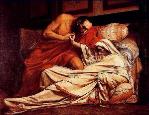

Борис Акунин
Мой календарь
По версии романа «Мастер и Маргарита», Понтий Пилат вынужден отдать Иешуа га-Ноцри на казнь, потому что тот совершил наихудшее из преступлений - посмел усомниться в божественности императорской власти.
«На свете не было, нет и не будет никогда более великой и прекрасной для людей власти, чем власть императора Тиберия!» - больным голосом кричит прокуратор, косясь на своего секретаря. Бродяга, так заинтересовавший Пилата, теперь был обречен.
Действительно, согласно тогдашнему римскому законодательству, за малейшее непочтение к особе императора полагалась жестокая казнь. Тиберий чрезвычайно заботился о поддержании своего величия. Галилейский проповедник был одной из множества жертв этого культа.
16 марта 37 года - день смерти «великого и прекрасного» Тиберия. Ее описание читаешь с чувством глубокого удовлетворения.
Больной император испустил последний вздох, и все кинулись поздравлять наследника Калигулу.
Вдруг мнимый покойник снова зашевелился - оказалось, что у него был просто обморок.
Всех охватил несказанный ужас: сейчас Тиберий придет в себя, и ему немедленно начнут стучать, кто радовался кончине богоравного кесаря.
Больше всех перепугался Калигула. Кинулся к великому, бесконечно обожаемому, лучезарному императору и придушил его, как цыпленка.
Иешуа га-Ноцри, конечно, пожалел бы и Тиберия, а мы давайте не будем. Радоваться, что гадина по-гадски и сдохла, конечно, очень не по-христиански, но приятно знать, что справедливое возмездие осуществляется не только на небесах.
Калигула, правда, был не лучше Тиберия, но и он свое получит.